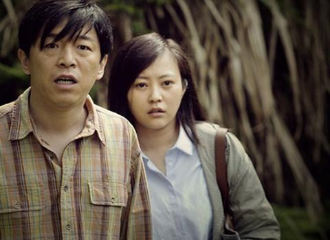
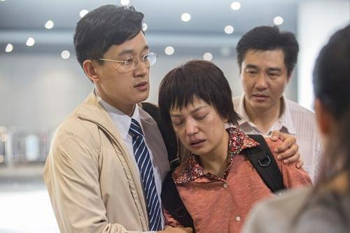
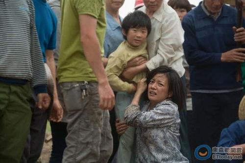
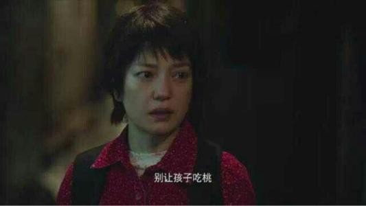
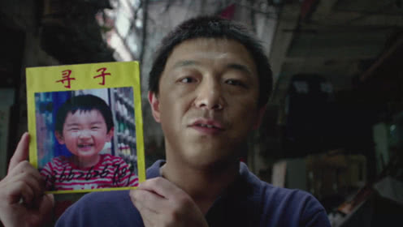

当前位置
首页
>亲爱的
亲爱的
(2014)无论多久 不管你在哪 我都要找回你
又名： Dearest 打拐、亲爱的小孩
演员： 赵薇 张译 佟大为
类型：
伦理 道德
地区：
中国大陆 香港
语言：
中文 英文
导演：
陈可辛
上映日期：
2014-08-28
片长：
130分钟
更新时间：
2014-09-25
豆瓣评分：
8.1
剧情介绍：
田文军和鲁晓娟曾是一对恩爱的夫妻，然而，两人之间的感情却被时间和争吵消耗殆尽，最终，他们选择了离婚。如今，联系着两人的唯一枢纽，就是可爱的儿子田鹏。然而，某一天，这唯一的纽带也断裂了，田鹏于一次外出玩耍时无故失踪，绝望和崩溃之中，田文军与鲁晓娟踏 上了漫漫寻子之路，并在途中结识了许多和他们一样无助的父亲和母亲们。
时光匆匆流逝，一条关于田鹏的线索浮出水面，促使田文军和妻子来到了一处偏僻的村落之中，在那里，他们看到了酷似田鹏的男孩，然而，男孩口中的“妈妈”却并非鲁晓娟，而是一位名叫李红琴的村妇。
请选择以下方式播放：
爱奇艺
腾讯视频
优酷
迅雷下载
亲爱的MP4视频截图




